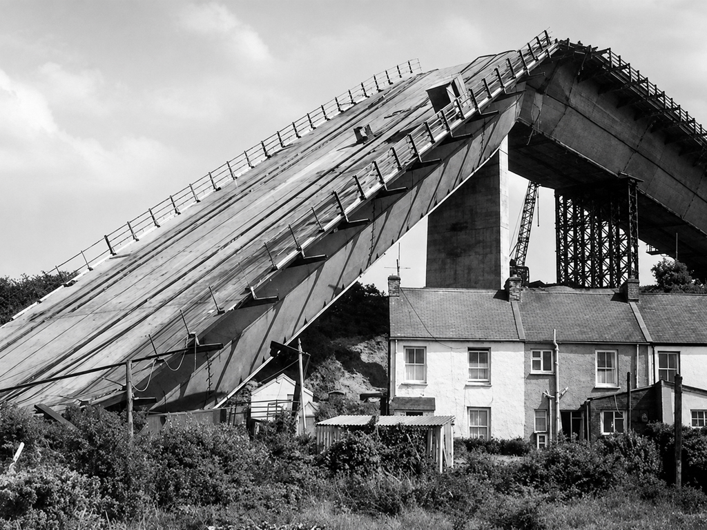
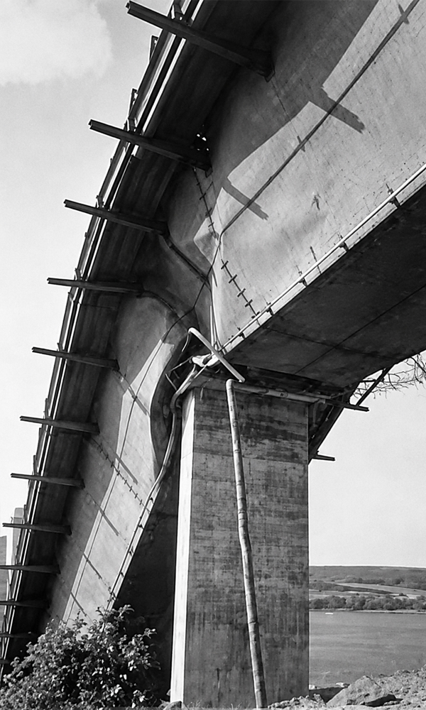
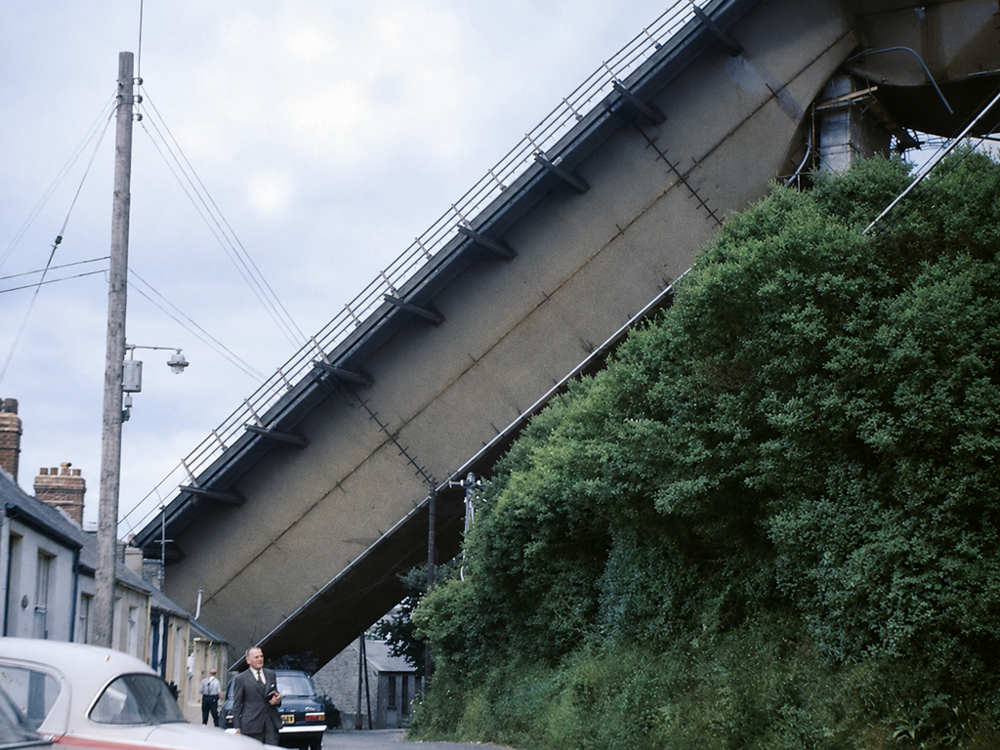
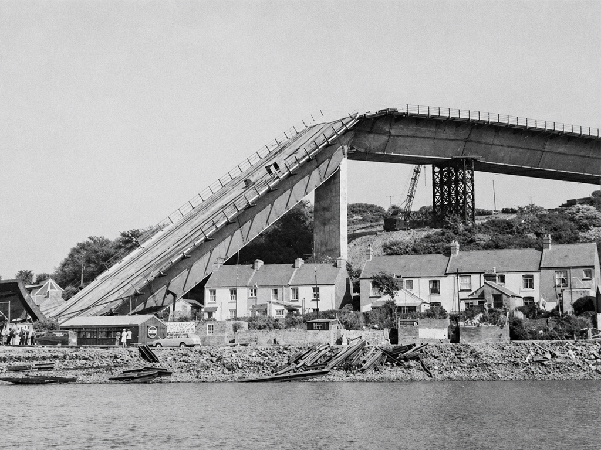
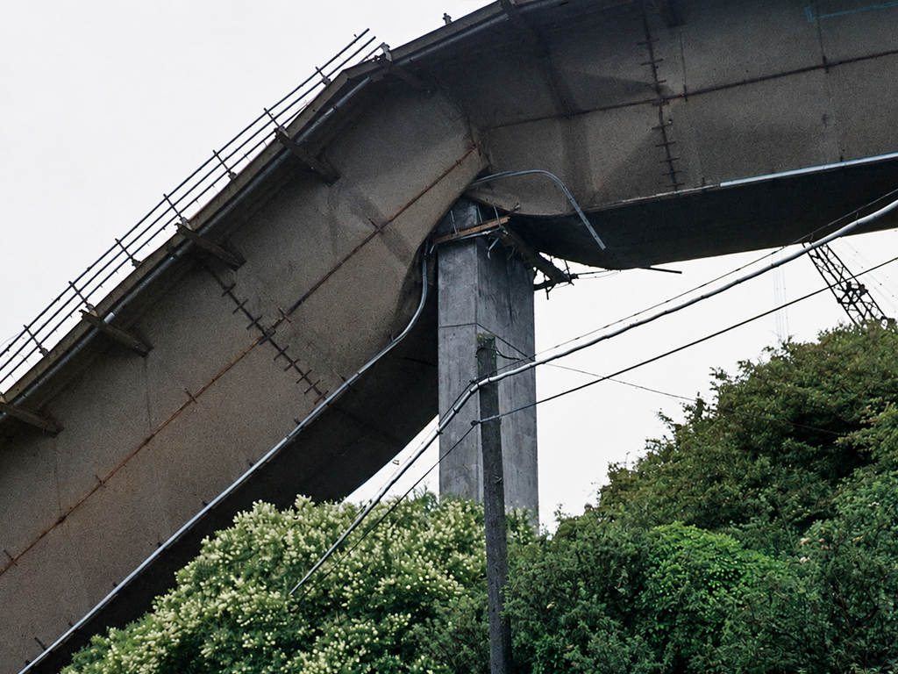
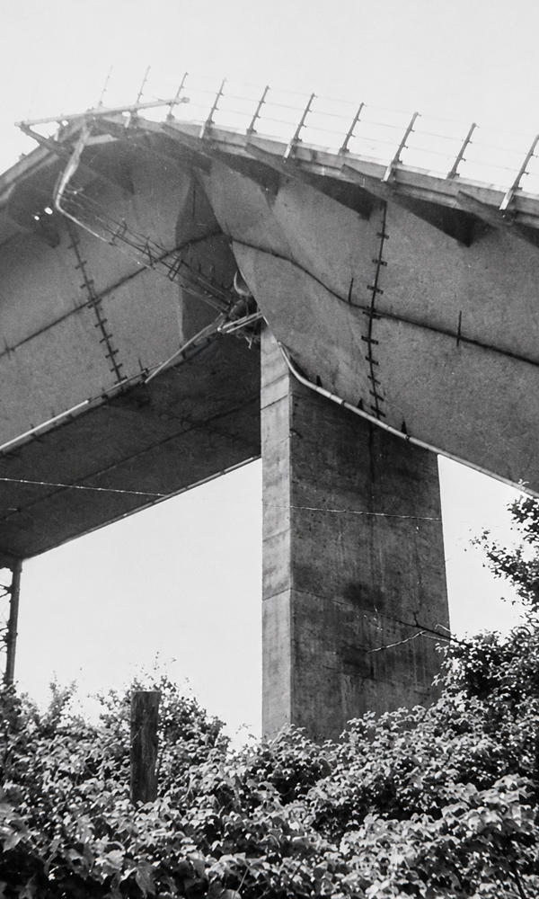
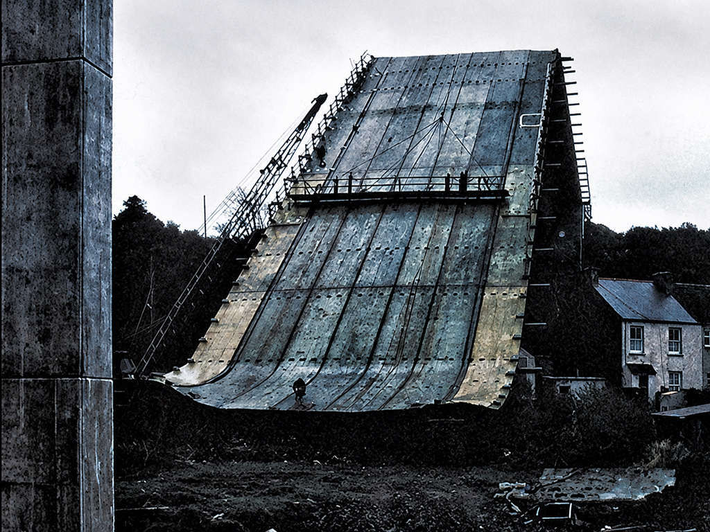

THE CLEDDAU BRIDGE COLLAPSE
When work began on the Cleddau Bridge in the late 1960s, it was meant to be a symbol of a growing local economy and a crucial link across the Milford Haven waterway in west Wales.
On 2 June 1970, about 21 months into construction, disaster struck.
A 60-metre steel box-girder cantilever being built on the south bank suddenly buckled and collapsed, sending a 150-tonne section crashing down onto the small village below.


THE BRIDGE AND ITS MATERIALS
On the bridge itself, four workers were killed and five others injured.
The bridge’s main span stretches 213 metres, offering at least 37 metres of clearance above the water. It carries the A477 road, the Wales Coast Path, and National Cycle Network Route 4.
Materials
The main structure is a steel box-girder. The piers (supports) and abutments (ends) are constructed in reinforced concrete.
Steel is used for the superstructure and reinforced concrete for the supporting elements.
Lessons Learned
Investigations into the collapse revealed a combination of design and construction issues.
The primary cause was buckling of the internal diaphragm, triggered by underestimated support reactions during cantilever erection.
The forces acting on the inner wall were greater than the design allowed for.

“In simple terms, the forces acting on the partially completed structure were greater than the design allowed for.”
LOCAL ECCENTRICITY
The reaction force did not line up with the centre of the support diaphragm.
This local eccentricity increased the severity of the forces acting through the support region.
SUPPORT BOLTS
Over-tightened bolts at the supports increased clamping forces, which further amplified the reactions.
This was not an isolated problem. During the early 1970s, several steel box-girder bridges around the world experienced failures due to similar issues: inadequate stiffening, poor detailing and insufficient understanding of the temporary loads encountered during erection.
ULTIMATELY LEADING TO
Major updates to structural design codes for steel box-girder bridges.
A step-change in analysing construction-stage forces, not just final completed-bridge behaviour.
Rapid development and widespread adoption of finite-element modelling (FEM), which allowed engineers to better predict stresses and buckling risks during erection.


ADVANTAGES OF THE BOX GIRDER
Box girder bridges are closed cell.
A closed-cell structural form is a hollow shape that is completely enclosed, meaning all its sides connect making the structure continuous.
In bridge engineering, this refers to the cross-section of a box girder, which is shaped like a sealed tube, usually rectangular or trapezoidal.
Because the cell is closed, the girder behaves like a stiff box, giving it very high torsional resistance, excellent stability and efficient load distribution compared with open shapes like I-beams that twist easily (see section on LTB).

LONG SPANS AND BEARINGS
The section resists distortion and buckling far better than open profiles.
Box girders are suitable for long spans as the dead-weight of the structure can be minimised.
Bearings
Because bearings are normally located beneath the bottom flange rather than directly below the webs, an internal diaphragm is required to transmit the support reactions.

DESIGN ASPECTS
Choosing a box-girder form typically results in relatively thin plate panels in the webs and flanges.
To prevent local buckling in compression and shear zones, adequate stiffening is required, often including horizontal stiffeners.
Although box sections provide high torsional stiffness, internal cross-frames are usually needed to control distortion.
“When shear is uneven between the two webs, one diagonal across the cell lengthens as the other shortens.”
STEELS AND SMOOTH PROFILE
Box girder bridges are typically constructed using structural carbon steels for webs, flanges, stiffeners and diaphragms due to their strength, weldability and cost-effectiveness.
Higher-strength grades are often used in highly stressed regions or long-span applications to reduce weight and plate thickness.
Smooth profile
Externally, box girders have few details that trap moisture or debris, which enhances durability whether they use coatings or weathering steel.
Clean girder surfaces also make coating maintenance more straightforward.